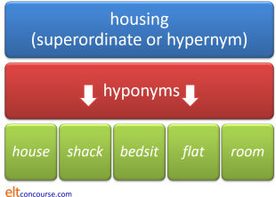

Relationships between words
| we understand each other |
 |
Technical terms |
This is where the terminology gets a little technical but bear with us, the concepts are quite easy to understand even if you forget the terminology.
 |
Five key ideas |
If we need to talk about the relationships between lexemes, we need to have some terms to talk about the ideas. Here they are:
 |
Idea 1: Homonymy |
The term homonymy comes from the Greek and means 'same name'. The reference is to words like these:
- dear and deer
- These words are written differently but pronounced the same
and have different meanings. They are
homophones. Other examples are:
hare-hair
right-rite-write
no-know
discreet-discrete - lead weight and lead an army
- These words are written the same but pronounced differently
and have different meanings. They are
homographs. Other examples are:
read (present tense) and read (past tense)
invalid (not usable) and invalid (sick person)
bass (a deep voice) and bass (a fish)
desert (leave one's duty) and desert (arid area)
export (the noun, stressed on the first syllable) and export (the verb, stressed on the second syllable)
tear (rip) and tear (drop of eye water)
Sometimes homographs are spelt and pronounced the same way but have different meanings. They are homographs and homophones and often simply called homonyms.
Examples of homonyms are:
bat (hitting tool) and bat (flying animal)
down (lower) and down (feathers)
 |
Idea 2: Hyponymy |
a relationship between words in which the meaning of one word
includes the meaning of others which are closely related
The word derives from the Greek meanings of under and
name.
- The superordinate or hypernym
- is the word which includes the meanings of all the others
- The hyponyms
- are all the second-level words which are related to each other
Like this:

 |
Idea 3: Word families, lexical sets and lexical fields |
On this site, the terms are defined like this because for teaching
purposes, it seems the most useful.
A word family refers to words with the same root.
A lexical set refers to words for objects (or verbs etc.) found in the
same conceptual area.
A lexical field refers to words of all kinds which occur in the same
topic.
Like this:

Lexical sets are usually defined as being words of the same class so we
could also have, e.g.
treat, care for, tend, operate, nurse, examine,
cure etc.
as verbs in a lexical set to do with health care.
 |
Idea 4: Synonymy |
Loosely, this means words of the same meaning but they don't always mean exactly the same to all people and often aren't interchangeable.
Examples are:
unhappy-sad
angry-irritated
happy-contented
old-aged-elderly
inexperienced-green
war-conflict
and so on.
There is a good argument that no pairs of words can be absolute synonyms because shades of meaning, grammatical forms or dialect use will always distinguish them. For example:
- sidewalk and pavement may be synonymous but the first is American dialect use and the second British dialect use
- determined and pig-headed may mean the same in some settings but the second is much more negative
- conceal and hide may have the same meaning but you can't say I concealed behind the curtain and you can say I hid behind the curtain.
Idea 5: Antonymy |
Antonymy refers to words which have opposite meanings. There are three types of antonymy:


- Gradable antonyms have meaning relative to each other. For example, a mouse is a tiny animal but huge compared to a microbe so tiny and huge are gradable antonyms.
- Converse antonyms imply their opposites so a nurse implies a patient, inanimate implies animate and so on.
- Complementary antonyms become synonyms if you insert not before them. For example, clear and unclear become synonyms with the insertion of not (not clear = unclear, clear = not unclear). Other types of antonyms don't exhibit this because not male ≠ female (it could mean neuter) and not old ≠ young (it could mean middle aged, quite new and many other things).
 |
Collocation |
Some words very often occur together so we have, for example:
torrential + rain
bright + sunshine
bitterly + cold
and so on.
Some words do not collocate so we can have:
strong winds and heavy snow
but not
strong snow and heavy winds
and
tall people and high mountains
but not
high people and tall mountains
Collocations can be analysed by:
- type:
- strength:

 |
Learn more about: |
 |
Take a test |
To make sure you have understood so far, try
a very short test of your
knowledge of word relationships.
Use the 'Back' button to return when you have done that.
If you got that all right, it is safe to move on.
That is the end of this section of the course. If you want to know more, go to the teacher training index and select the level you want. That will take you to a contents menu from which you can select what you need.
Click here to return to the course index.